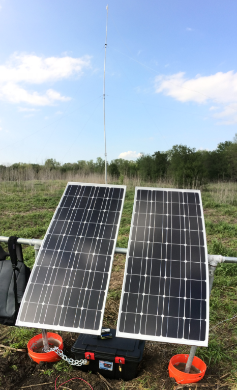
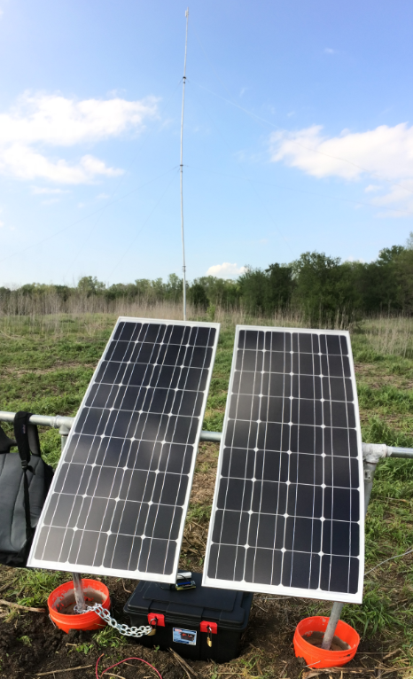

NHC Webcam Server
Tower near NHC Building
(Live Streaming)
Raspberry Pi + Moteino FTP Data Logger
Tower at Relay site
Moteino Network
The Texas Environmental Observatory(TEO) Weather and Soil Station located on the Greenbelt Corridor of the Ray Roberts Lake State Park(near the US 380 entrance east of Denton) collects data continuously storing it in the memory of a data logger. Currently, a researcher must go out to the station to collect data manually, which is time and economically inefficient. A group of graduate students tried to set up a system that utilizes two towers to wirelessly transmit data to the Natural Heritage Center (NHC) located west of the station. However, they were not successful at achieving this goal because of lack of line of sight due to the height of the trees.
In this project, our group decided to approach the problem differently by using a network of low power devices (Moteino+RFM69W) that go under the canopy of trees and a relay site (Nanostation M2) in order to facilitate data transmission. The data will be stored in the Raspberry Pi which acts as FTP server connected to the internet network from the NHC through Nanostations M2.
NHC Webcam Server
Tower near NHC Building
(Live Streaming)
Raspberry Pi + Moteino FTP Data Logger
Tower at Relay site
Moteino Network
Copyright © 2014 | All Rights Reserved | UNT Weather | Department of Electrical Engineering